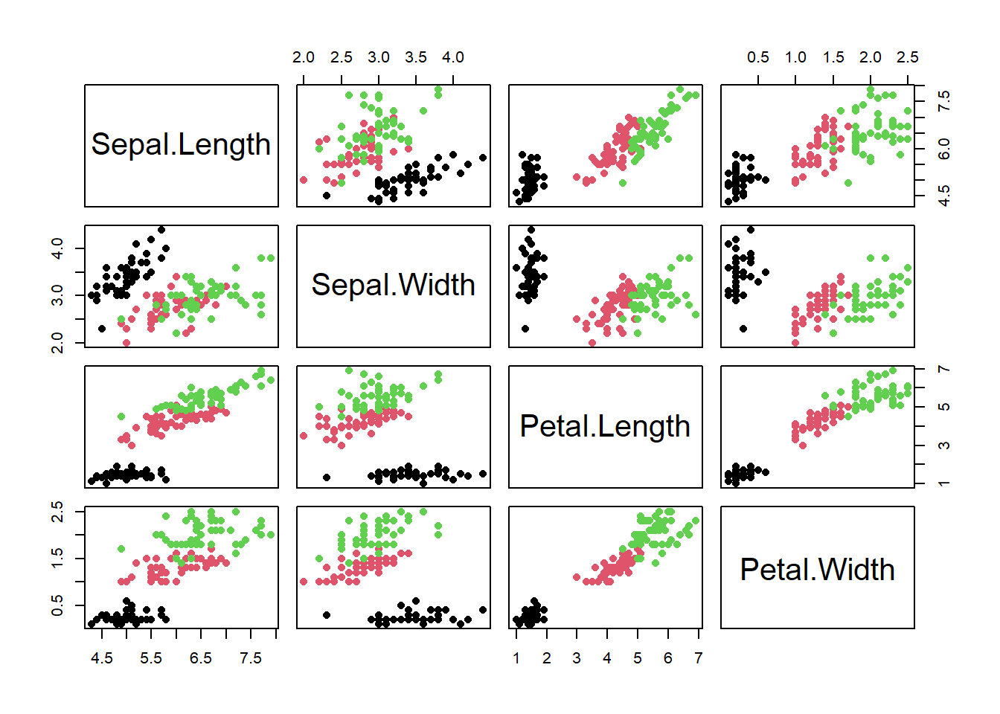

## Correlation matrices ####
# Try this:
# Use the iris data to look at correlation matrix
# of flower measures
data(iris)
names(iris)[1] "Sepal.Length" "Sepal.Width" "Petal.Length" "Petal.Width" "Species" cor(iris[ , 1:4]) # all rows, just the numeric columns Sepal.Length Sepal.Width Petal.Length Petal.Width
Sepal.Length 1.0000000 -0.1175698 0.8717538 0.8179411
Sepal.Width -0.1175698 1.0000000 -0.4284401 -0.3661259
Petal.Length 0.8717538 -0.4284401 1.0000000 0.9628654
Petal.Width 0.8179411 -0.3661259 0.9628654 1.0000000# fix the decimal output
round(cor(iris[ , 1:4]), 2) # nicer Sepal.Length Sepal.Width Petal.Length Petal.Width
Sepal.Length 1.00 -0.12 0.87 0.82
Sepal.Width -0.12 1.00 -0.43 -0.37
Petal.Length 0.87 -0.43 1.00 0.96
Petal.Width 0.82 -0.37 0.96 1.00# pairs plot
pairs(iris[ , 1:4], pch = 16,
col = iris$Species) # Set color to species...